Am nächsten Tag konnten wir die Verbotene Stadt nicht länger hinausschieben. Wir sind mit dem Bus gefahren, weil der schneller erreichbar ist. Er war mit schnatternden Senioren vollgestopft, die der Busfahrer mit überraschenden Vollbremsungen zum Schweigen bringen wollte. Aber es war so eng, dass man eigentlich nicht fallen konnte. Neben der Überraschung, wo gehalten wird, ist Busfahren noch günstiger als die Metro. Die Straße, die die Verbotene Stadt vom Tiananmen Platz trennt, ist so breit wie der Rhein. Statt Ampel hat man gleich eine Unterführung gebaut - niemand hätte es bei einer Phase hinüber geschafft. Der Block ist so lang, dass an beiden Enden U-Bahnstationen sind. Es wird schnell klar: Hier soll beeindruckt werden. Die an sich schon beeindruckende Außenmauer wird von einem riesigen Mao-Gemälde geziert, auf dem der Große Anführer milde vor sich hin lächelt.
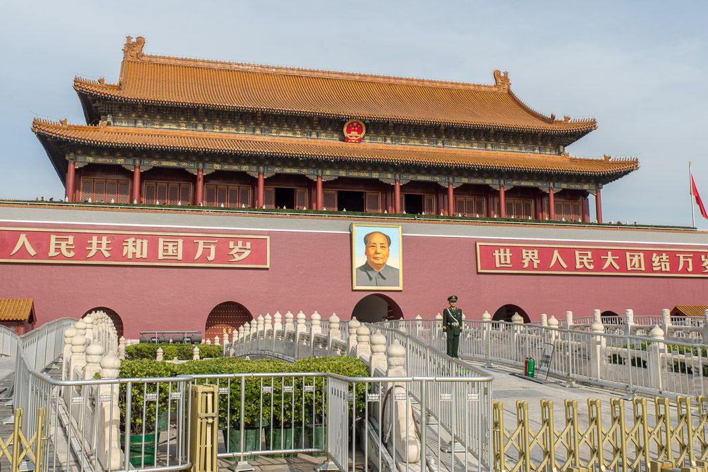Nach einer Sicherheitskontrolle, die in jeder U-Bahn-Station und rund um den Tiananmen auch auf den Gehwegen aufgebaut sind, konnten wir mit Hunderten anderen über eine Brücke in die Verbotene Stadt gehen. Innerhalb der Mauern gelangt man in einen überdimensionierten Hof gefolgt von einem „Tor“, das anderswo als Burg durchgegangen wäre.
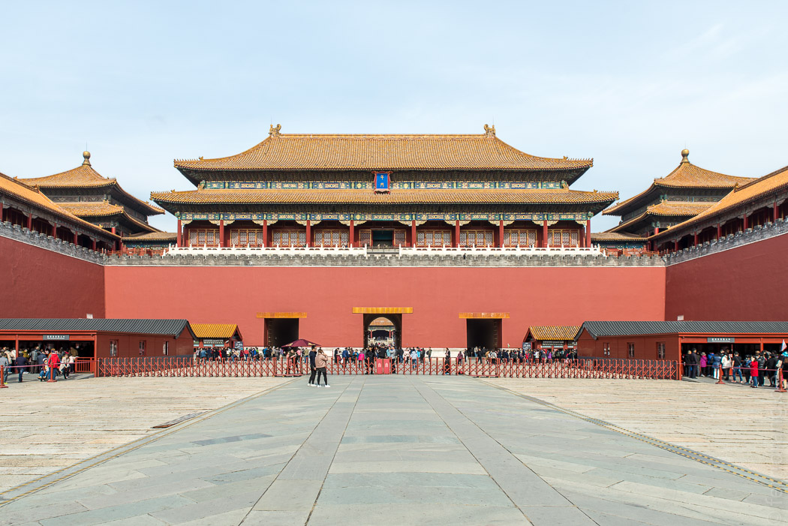 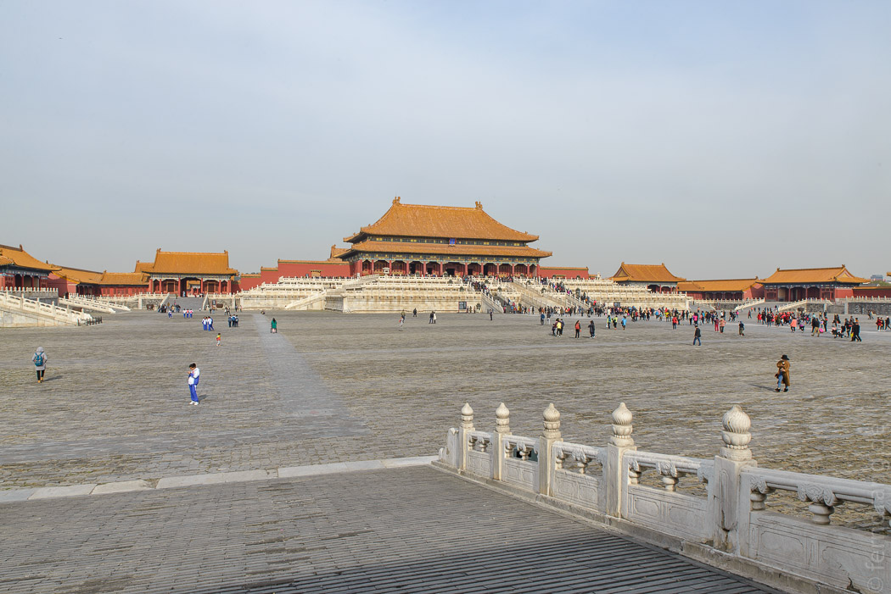Dahinter wiederholt sich das mit weiteren Höfen und weiteren Toren, bis man am Nordende wieder ausgespuckt wird. Durch einen besonders schönen Hof wird ein Kanal in einem Bogen geleitet, über den fünf Brücken führen. Man kann sich vorstellen, dass Bittsteller und Vasallen in jedem Hof ein bisschen kleiner wurden, bis sie kriechend vor dem Kaiser ankamen.
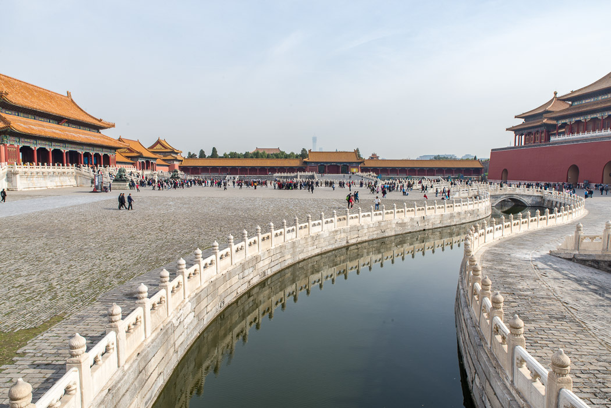Die Dächer sind mit orangen Kacheln gedeckt und die Wände rot lackiert. Auf den Ecken der geschwungenen Dächern sitzen „Dachwächter“, meistens Drachen, Löwen oder andere Tiere, die in China nicht mehr so häufig anzutreffen sind. Neben der Hofachse gibt es mehrere Straßenzüge mit allerlei kaiserlichen Wohnhäusern. Der Aufbau erinnert an die Kaiserstadt Hue in Vietnam, die hier allerdings in einen der Nebenhöfe passen würde. Die Anlage ist ziemlich beeindruckend aber wegen der Ausmaße und der Eintönigkeit, auch ermattend - das hat man davon, wenn man ein Design durchzieht.
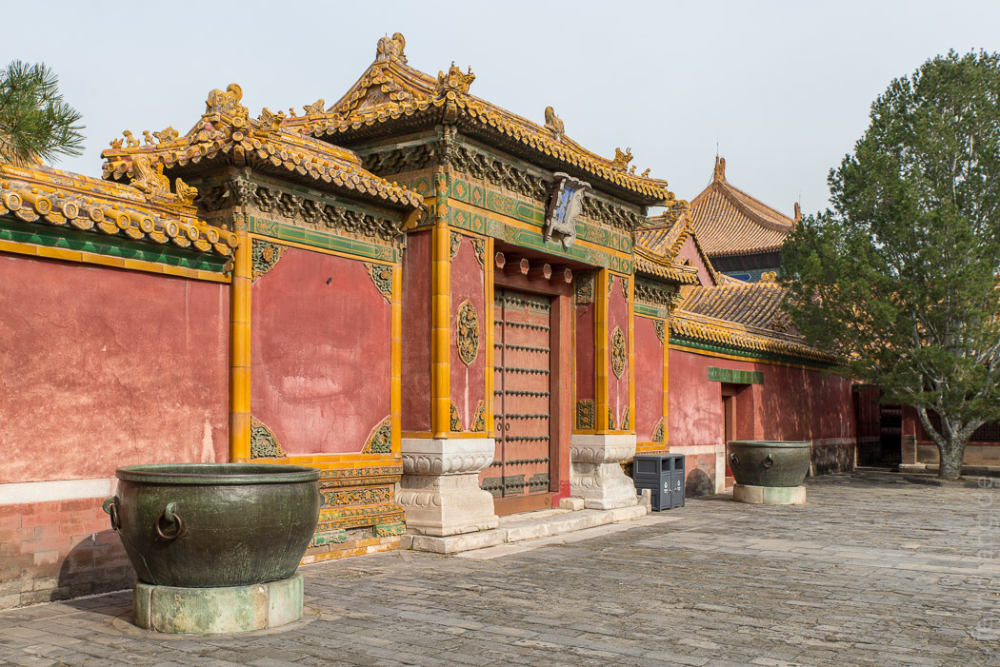 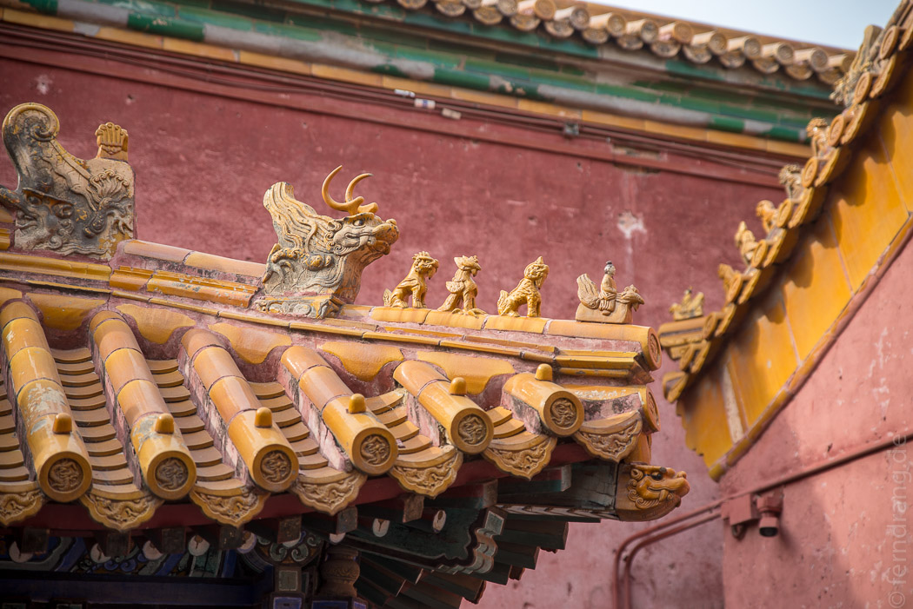 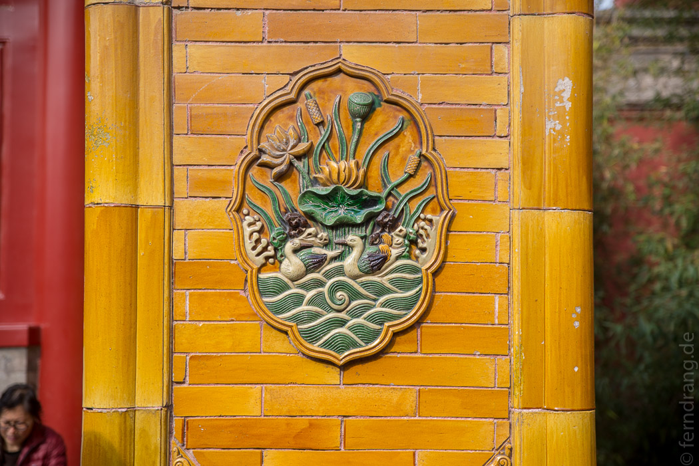Nach einer durch Gesten und Geräusche in Taubstummen-Chinesich georderten Nudelsuppe haben wir versucht auf den Tiananmen zu kommen. Aber ausgerechnet in dem Moment wurde der Platz aus unerfindlichen Gründen von der Polizei geräumt. Die Einöde des rekordverdächtig überdimensionierten Platzes lässt sich aber auch ganz gut von der gegenüberliegenden Straßenseite bewundern.
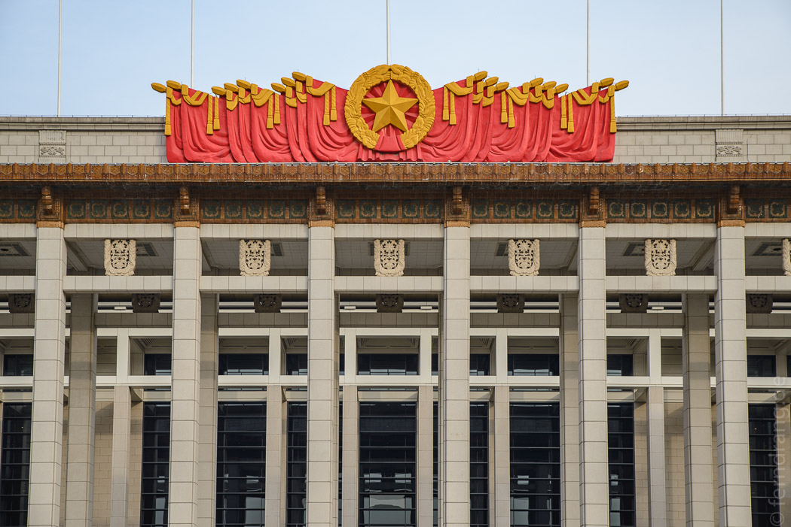 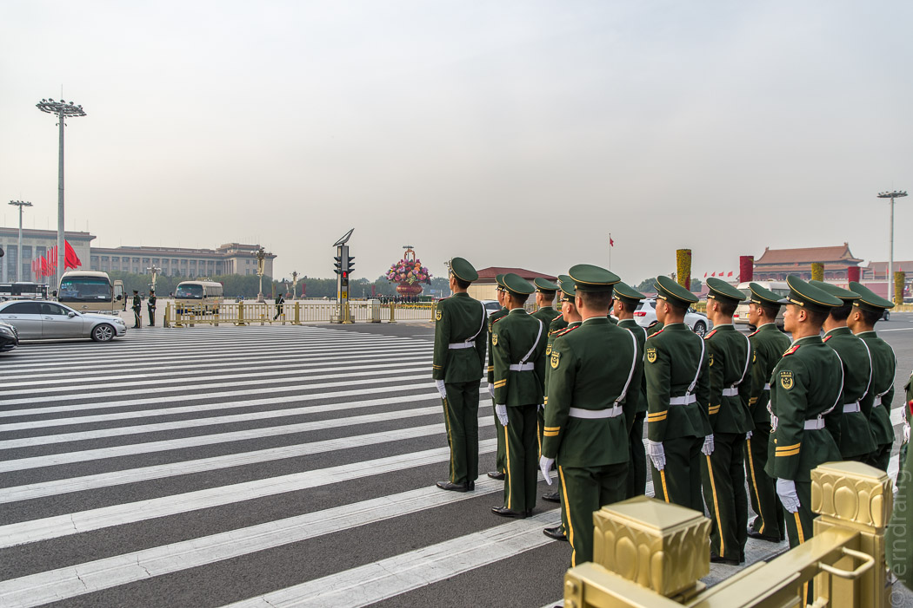Stattdessen sind wir wieder in die Metro gestiegen und haben uns auf den langen Weg zum Sommerpalast gemacht. Nach einer Ewigkeit haben wir das Gelände im Nordwesten der Stadt erreicht. Leider war es um 16 Uhr schon dämmrig und kühl. Auf der Nordseite ist der Eingang verspielt in einen Hügel eingebaut, wo Treppen durch künstliche Felsen führen. Dahinter geht es zu einem See herunter. Es gibt genug Tretbote, damit alle Bürger gleichzeitig fahren könnten, wozu sich im Herbst aber kaum jemand hinreißen lässt. Vom See aus sieht man, dass auch diese Anlage recht prächtig gebaut ist. Der Palast thront über einer zig Meter hohen Mauer, die steile Treppen hinaufführen. Leider kamen wir eine Minute zu spät, so dass vor unserer Nase abgeschlossen wurde.
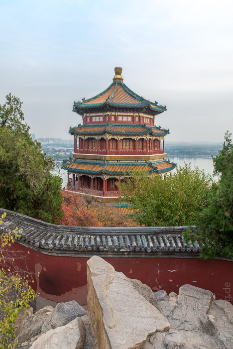 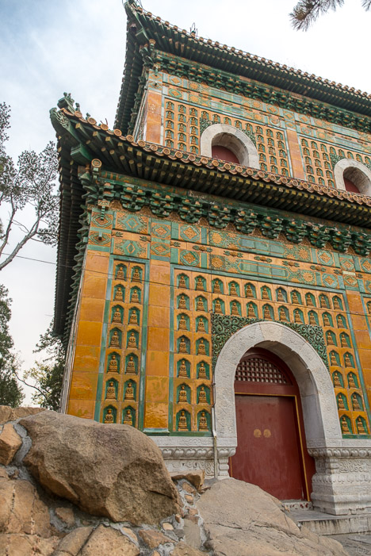